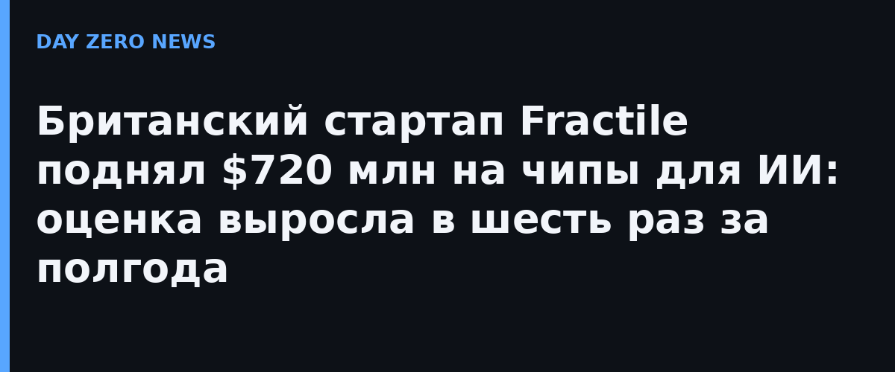

Лондонский стартап Fractile, основанный в 2022 году исследователем робототехники Уолтером Гудвином из Оксфорда, привлёк $720 млн при оценке $7 млрд post-money. Шесть месяцев назад стартап оценивался примерно в $1,1 млрд — раунд поднял цену в шесть раз. Раунд, по данным Financial Times, совместно вела Thrive Capital; в нём также участвовали Founders Fund, Lightspeed, Redpoint, Conviction, CapitalG и суверенный ИИ-венчурный фонд правительства Великобритании.
Технологическая ставка Fractile радикальна: компания отказывается от выгрузки весов модели во внешнюю память (HBM) и держит их прямо на чипе в SRAM — свой подход она называет «memory-compute fusion». Идея в том, что узкое место современных ИИ-ускорителей — не вычисления, а гонка за данными из памяти; если весы лежат рядом с ядрами вычисления, латентность и энергопотребление inference резко падают. Отдельного пресс-релиза с деталями раунда на собственном сайте компании пока нет — подтверждённые цифры исходят из первоисточника расследования FT и анонса Британского полупроводникового центра.
По сведениям FT, интерес к чипам Fractile как ранний покупатель проявляет Anthropic. Речь пока идёт о переговорах, а не о подписанном заказе: ранее Bloomberg писал о договорённость примерно на $250 млн поставки чипов, но официального подтверждения этой суммы нет. Показательно, что на фоне новостей о собственном IPO Anthropic в тот же день и разговоров об оценке листинга выше $1,5 трлн лаборатория активно ищет альтернативы Nvidia — рынок inference растёт быстрее, чем Nvidia успевает его насытить.
Скромная деталь, которую стоит держать в голове: у Fractile до сих пор нет серийного чипа. Компания не ожидает развёртывания своих систем в дата-центрах раньше 2027 года. Так что $720 млн — это ставка инвесторов на то, что архитектура «всё в SRAM» переживёт и инженерные риски, и неизбежные попытки Nvidia купить либо скопировать идею. Британия же впервые так явно вложила государственные деньги в частного производителя ИИ-кремия: суверенный ИИ-фонд в раунде — сигнал, что Лондон считает inference-чипы стратегической инфраструктурой.
А в России направление отечественных ИИ-чипов закреплено на уровне объявленного правительством плана «Ноут» — с собственными дата-центрами на российском железе. Приватных раундов такого масштаба в этой отрасли у нас пока нет: разница не в амбициях, а в доступе к венчурному капиталу и контрактному производству.